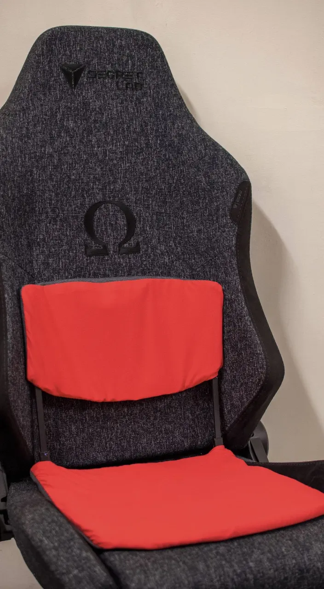

product
BetterSitt

- context
- SUTD Final Project
- year
- 2021
- type
- product
Back pain is one of the most common ailments especially amongst people who sit for long hours. This phenomenon can even be exacerbated by the current pandemic situation in which most workers are working from home.
BetterSitt is a smart and seamless addition to any workstation setup. It helps track sitting habits and cultivate better sitting habits of frequent position changes and stretching breaks.
BetterSitt is designed to be fitted on any chair and to be used by anyone! The minimalist and compact design allow you to use it at any workplace - on your wooden chair at home or your ergonomic chair at your office!
Machine Learning
Machine Learning was used to predict posture of the person sitting on BetterSitt using sensor data distribution and height and weight of the person. We trained our very own model using a Random Forest Classifier by collecting over 12,000 datapoints over a variety of heights and weights. The datapoints were thus labelled with our novel automated labelling system that used the skeleton prediction model Alphapose to classify the positions. This allowed for easy collection and labelling of data to train the model, and we thus achieve an accuracy of 97% for easier to predict postures (such as whether the person’s back is supported) and an accuracy of 85% for more complex postures (such as whether the person is sitting cross legged)
Bamboo Jersey Fabric Casing
Super soft, lightweight and cooling. The perfect material for hot and humid Singapore. It also comes in a wide variety of colors and patterns.
Collapsible for Easy Transport
Our specially designed ratchet makes BetterSitt easy to fold and roll so it can be easily packed into any bag and brought anywhere
Polyurethane Foam
Thin and low-density for a breathable body that does not get in the way of the ergonomics of your chair.
Invisible Structure
Flexible yet strong fibreglass structure that can bend with the shape of your chair and body, you won't even know you are sitting on a BetterSitt!
Non-invasive Sensing
No cameras used to detect posture, 11 pressure sensors are all you need!
These embedded pressure sensors allow accurate posture and sitting habit sensing and data collection without invading your privacy and personal space.
Distraction-Free Reminders
Haptic feedback allows for distraction free reminders, Embedded with a vibration motor, our product will remind you to change your posture or stand up to take a break from time to time!
No more checking phone during a focused work session! Let your creativity flow without worrying how your posture is!
Long Lasting
Long battery life of more than 7 hours to ensure that your posture will always be taken care of in every sitting!


